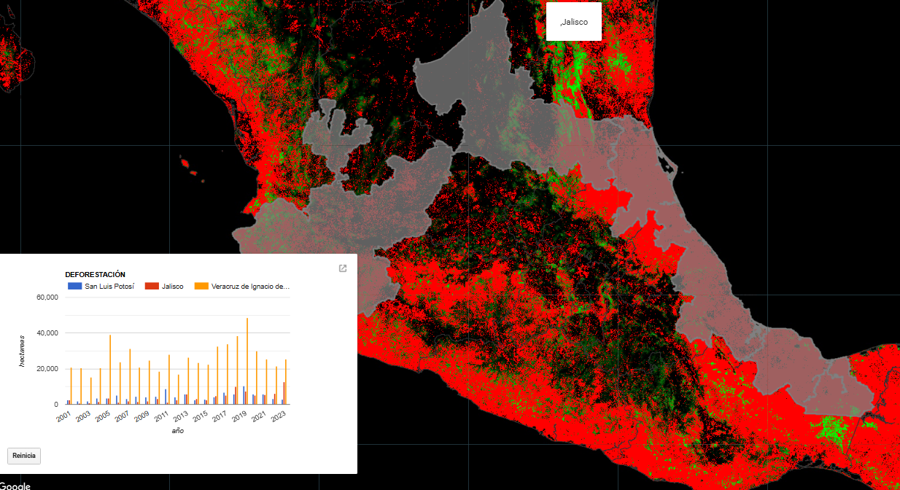

Mapa 1: Uso de Suelo
Coberturas para los años 2019 y 2023 en la Región Norte de Yucatán.


Mapa 3: Deforestación
Pérdidas de cobertura forestal en México para el periodo 2001-2023
Mapa 4: Cambio de Cobertura
Análisis multitemporal 2017-2021.
Mapa 5: Monitoreo de Agroecosistemas
Uso de imágenes de radar para detectar agroecosistemas del trópico húmedo
Mapa 6: Percepción remota y fotointerpretación
Cartografía base, cartografía temática
Mapa 7: Explorador de imágenes Sentinel-2
Monitoreo de series de tiempo
Mapa 8: Conectividad Funcional del Paisaje
Corredores de menor costo energético para el movimiento del Jaguar (P.onca)
Mapa 9: Distribución de especies
Densidad de población de Eretmochelys imbricata en zonas costeras.
Mapa 10: Visualización y descarga de imágenes Sentinel-2, Landsat y MODIS.
Monitoreo forestal